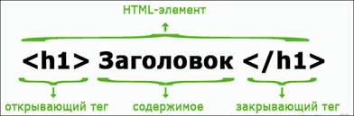

HTML (HyperText Markup Language) - язык разметки гипертекста.
HTML
состоит из тегов - команд, которые указывают браузеру,
как отображать помещенный в них
текст.
Элемент head является контейнером для метаданных (данные о данных) и помещается между
тегом html и тегом body
Элемент title определяет название документа и является обязательным для всех документов
HTML/XHTML.
Элемент meta используется для указания, какой набор символов используется, описание
страницы, ключевые слова,
автор и другие метаданные.
Элемент body представляет собой контент (содержимое) документа.
В HTML ссылки определяются тегом a, а href атрибут указывает адрес назначения ссылки.
